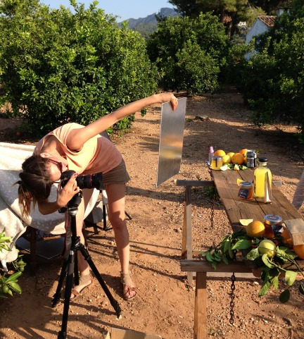
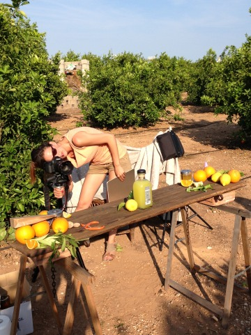
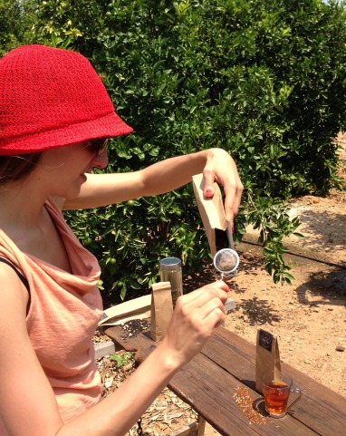
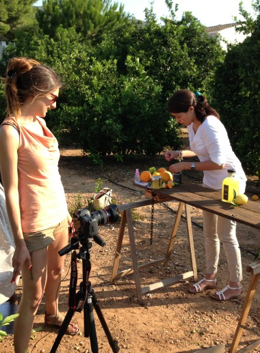

¿Sabíais que las mandarinas son originarias de las zonas tropicales de Asia? Se cree que el nombre se debe al color de los trajes que utilizaban los mandarines, gobernantes de la antigua China. Entonces, ¿quién creó la mandarina clementina? ¿Fue debido a un cruce natural entre especies? ¿Desde cuándo las cultivamos en el Mediterráneo? Hoy hablaremos de éstas y otras curiosidades que nos acercarán más al interesante mundo de los cítricos.
Noticias
Categoría
-
Curiosidades y origen de la mandarina

-
¿Quieres saber qué contiene nuestra mermelada casera de naranja?
 La mermelada de naranja de La Familia Serra está elaborada de un modo totalmente artesanal y todo el proceso es manual, desde la elaboración hasta el envasado al vacío de los tarros. La elaboramos en una cocina que sólo se utiliza para eso, por lo que ni siquiera pueden contener trazas de otros productos, lo que es una tranquilidad para las personas que son alérgicas a los mismos. Nuestra mermelada de naranja sólo contiene naranja, azúcar y un poco de zumo de limón. Continue Reading
La mermelada de naranja de La Familia Serra está elaborada de un modo totalmente artesanal y todo el proceso es manual, desde la elaboración hasta el envasado al vacío de los tarros. La elaboramos en una cocina que sólo se utiliza para eso, por lo que ni siquiera pueden contener trazas de otros productos, lo que es una tranquilidad para las personas que son alérgicas a los mismos. Nuestra mermelada de naranja sólo contiene naranja, azúcar y un poco de zumo de limón. Continue Reading -
LaMejorNaranja en la revista de Ana Rosa de septiembre
Pincha en la imagen para leer el artículo:
-
¿Cuándo tendremos naranjas en casa?

Transcurre el mes de septiembre y no dejamos de estar pendientes ni de nuestros naranjos ni del tiempo meteorológico. Es el momento de mimar con detenimiento los campos de L’Hort de Muntanya para conseguir la mejor naranja. Los naranjos necesitan durante esta época el sol, sobre todo en la parte más interior del árbol, pero también el frío para que las naranjas maduren y saquen su color naranja. Así que, al contrario de lo que cree mucha gente, la naranja requiere bajas temperaturas para no retrasar su maduración, de hecho si durante el mes de octubre hace mucho calor el aspecto de la naranja es más verde. Continue Reading
-
Entrevista a Luis Serra en Ecommerce News

En LaMejorNaranja estamos encantados de poder mostraros la última entrevista que Luis Serra ha concedido al portal de noticias Ecommerce News, una entrevista profunda en la que se habla, entre otras cuestiones, de nuestros proyectos de expansión por Europa. Te dejamos en enlace para que puedas leerla con detenimiento. ¡Esperamos que te guste! Continue Reading
-
Descubre el making of ‘Productos de la Familia Serra’

Un día intenso pero divertido, así vivimos en LaMejorNaranja la sesión de fotos de los productos de la Familia Serra. A primera hora de la mañana comenzó el trabajo, esta vez sin nervios, puesto que en esta ocasión no era como cuando grabamos los vídeos para nuestra página web. Los protagonistas eran nuestros productos caseros. Eso sí, algunas fotografías se complicaron más de lo previsto, en concreto las que hicimos a los tés, ya que los paquetes se movían mucho debido al viento, hasta que hicimos la pequeña trampa de rellenarlos con arroz para fotografiarlos adecuadamente. También nos costó encontrar flores de azahar para ponerlas como detalle en algunas de las instantáneas, ya que su floración es en el mes de marzo, así que tuvimos que recorrer todo el campo para encontrarlas.

A mediodía hicimos un descanso porque la posición del sol era la peor para sacar fotos al aire libre, por lo que aprovechamos para comer y ver el trabajo realizado durante toda la mañana por Monste Labiaga, de Fotografía eCommerce, con la que trabajamos muy a gusto.


Tras un merecido descanso, cogimos fuerzas para ponernos manos a la obra por la tarde para realizar las últimas fotos de los productos de la Familia Serra, disfrutando del buen ambiente que habíamos creado a lo largo de toda la jornada.

En LaMejorNaranja estamos encantados de poder mostraros el making of de esta sesión fotográfica tan especial para nosotros, y esperamos que disfrutéis este verano de nuestros tés, miel, mermeladas y rodajas de almíbar de naranja y limón, así como de nuestro licor casero.
-
Museo de la naranja y el arroz, un rincón de la historia de LaMejorNaranja

Los naranjos y limoneros del campo de L’Hort de Muntanya conviven todo el año con un lugar muy importante para LaMejorNaranja: el Museo de la naranja y el arroz. Este lugar nació casi sin querer hace 35 años, cuando Luis Serra empezó a coleccionar aperos de labranza; lo hizo poco a poco y con mucha ilusión, en principio para decorar las terrazas de su casa, inmersa en L’Hort de Muntanya. Continue Reading
-
¡Elige el pack de productos de la Familia Serra que más te guste!
En LaMejorNaranja sabemos que los productos artesanales y caseros siempre triunfan, porque están hechos con cariño y no pierden ni sus propiedades ni su sabor auténtico y natural. Por eso hemos elaborado los productos de la Familia Serra y preparado unos packs muy completos pensando en lo que más te gusta. Continue Reading
-
‘El discurso del ascensor’ de Luis Serra

¿Conocéis el Elevator Pitch? Luis Serra participó el pasado 16 de junio en el programa del canal 24 horas de TVE, ‘Emprende’, en lo que se conoce también como ‘El discurso del ascensor’. Se trata de demostrar la capacidad que se posee para condensar durante unos segundos tu negocio, justo en el tiempo que podrías estar dentro de un ascensor.
-
La noria de L’Hort de Muntanya, un referente en la historia de LaMejorNaranja

Luis Serra todavía recuerda bien cuando en los años 50 acudía con otros niños de su pueblo, Corbera, a jugar a la noria que está inmersa en la finca de LaMejorNaranja. Tan sólo tenían 10 años, y les encantaba ir a esa preciosa noria que es conocida por todos como la ‘cenia redonda’, un lugar en el que hoy sería impensable que fuesen los niños a divertirse, dada la peligrosidad que conlleva jugar cerca de un pozo.